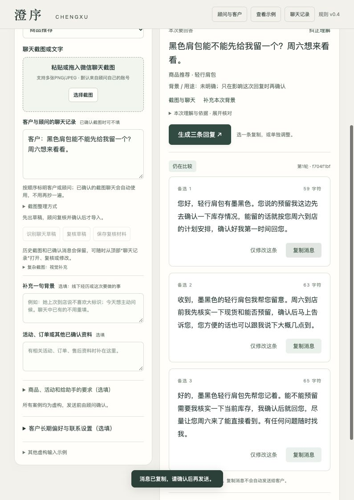
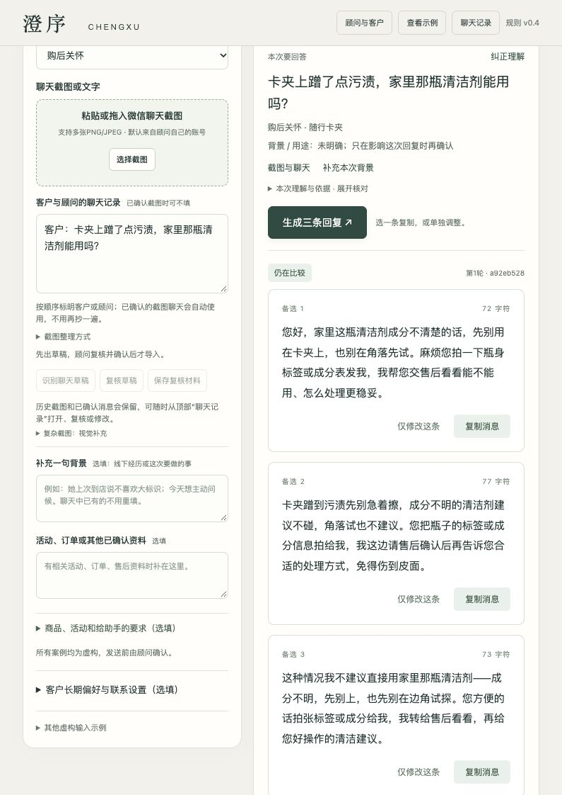
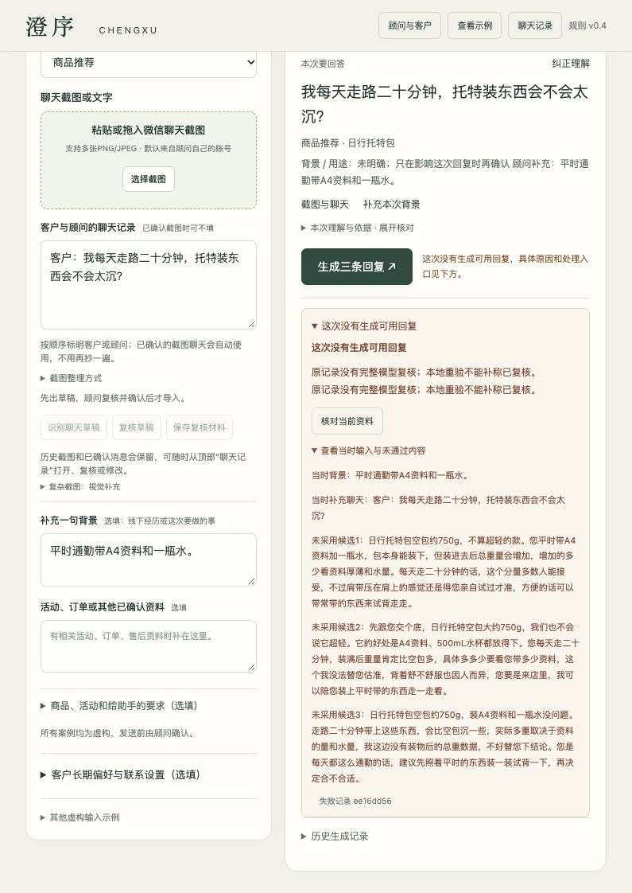

0.19.0 · 五案首次真实收尾复测
本轮不建议直接提交。 代码、源码检查包、方法论、演示与验证说明统一到0.19.0；这是版本对齐，不是质量全通过。N16仍有实质问题，真实AI开发对话截图仍缺。界面/新增功能冻结，品牌v0.4与原50输入及150原文未改。
本轮五案每案生成一次、复核一次，共10次真实请求、167,134 token，零自动重试。全部15条逐字保留，失败不重抽。生成2.1.0、复核1.4.0、task-materials2.3.0、输出协议0.10.1。实际四组程序交付、N16未交付；这不是愿发率或事实通过率。N44仍有具体编辑问题，复核本身也有可错之处。
改了什么
- 本次取材仍与完整校验资料分开。增加answer_basis，区分事实、可作的日常判断和有来源的业务动作；重量含相关未知，清洁剂处理停在信息收集和售后判断，活动对象明确是三款商品。
- 收紧库存业务跟进路由的ready三条约定，本次用N21首次真实验证；真缺正文仍请顾问补，非严格接口也有后端同一边界。
- 改写复核字段说明，delete_effect判断的是删掉句段后的影响；无据体验或操作不能当polish。结构不全和无效JSON仍拒绝，未扩大兼容。
- 校正编辑尺度：正常服务收尾、必要否定提醒和相关试背不一律删除。没有关键词删尾、手工改模型原文或新增审核模型。
版本与阶段
原正式50仍是0.15.1首四/0.15.2余46的首次结果及0.15.3统一离线重验。上一轮八案分0.18.0/0.18.1生成、0.18.2本地补丁，与本轮0.19.0五案各自保留，不能合并最好结果统计。N22、X01、X02没有重跑。
本轮完整输入与模型原文
N16
原输入：
{
"scenario": "商品推荐",
"client_info": "平时通勤带A4资料和一瓶水。",
"conversation": "客户：我每天走路二十分钟，托特装东西会不会太沉？",
"related_info": "",
"advisor_instruction": "结合她的使用情况帮她判断。",
"product_ids": [
"P01"
]
}
候选1原文
日行托特包空包约750g，不算超轻的款。您平时带A4资料加一瓶水，包本身能装下，但装进去后总重量会增加，增加的多少看资料厚薄和水量。每天走二十分钟的话，这个分量多数人能接受，不过肩带压在肩上的感觉还是得您亲自试过才准，方便的话可以带常带的东西来试背走走。
候选2原文
先跟您交个底，日行托特空包大约750g，我们也不会说它超轻。它的好处是A4资料、500mL水杯都放得下。您每天走二十分钟，装满后重量肯定比空包多，具体多多少要看您带多少资料，这个我没法替您估准，背着舒不舒服也因人而异，您要是来店里，我可以陪您装上平时带的东西走一走看。
候选3原文
日行托特包空包约750g，装A4资料和一瓶水没问题。走路二十分钟带上这些东西，会比空包沉一些，实际多重取决于资料的量和水量，我这边没有装物后的总重数据，不好替您下结论。您是每天都这么通勤的话，建议先照着平时的东西装一装试背一下，再决定合不合适。
程序：error；模型复核：无有效JSON结论；实际调用：生成1、复核1。
程序原因：复核没有返回完整有效结构，原响应保留；未删减、降级或重试。
独立事实/任务判断：不通过。
独立编辑判断：防守性自述仍明显，三条都落到试背。
复核可信度：复核JSON缺逗号或括号，未形成有效结论；没有补括号或重试。
第一条“这个分量多数人能接受”没有群体使用数据支持，是新的无据肯定，本地规则也未识别这一新表达；最终因无效复核被拦，不能说事实护栏已经完整拦住。第二条“先跟您交个底”“我没法替您估准”，第三条“我这边没有装物后的总重数据，不好替您下结论”仍把内部能力限制写给客户。自重750g、物品增加重量有依据；相关试背建议本身合理，但三条都靠试背结束，没有执行可选帮助的取舍。该案保持未交付，不能宣布已修好。
完整原记录
N39
原输入：
{
"scenario": "活动邀请",
"client_info": "",
"conversation": "客户：活动主要看些什么？我不是很懂皮具。",
"related_info": "虚构门店活动“日常收纳小聚”：2026-11-14 14:00—16:00，澄序广场8号精品店。时段内持续演示日行托特包、轻行肩包、随行卡夹如何收纳常用物品，也可自由体验、带日常物品对照。可在时段内短暂停留，无须全程参加。可带一位朋友，参加人需要提供称呼登记，参加安排由门店确认。",
"advisor_instruction": "用容易懂的话介绍内容。",
"product_ids": []
}
候选1原文
不用懂皮具也能看明白的～活动时段内会持续演示日行托特包、轻行肩包、随行卡夹怎么收纳日常物品，您也可以自己上手体验，带上平时包里的东西对照着试试，感受更直接。
候选2原文
活动主要看的是实用这块：现场会持续演示日行托特包、轻行肩包和随行卡夹如何收纳常用物品。不懂皮具完全没关系，这种演示看一遍就知道顺不顺手；也欢迎您自由体验，带自己的日常物品来对照最直观。
候选3原文
您放心，不需要懂皮具。现场会用日行托特包、轻行肩包、随行卡夹做收纳演示，看常用物品怎么放进去、拿取方不方便；演示时段内都能看，也可以自己动手试、拿自己的东西对照感受。想了解哪款，到时候直接问就好。
程序：success；模型复核：pass；实际调用：生成1、复核1。
独立事实/任务判断：当前原文事实与任务通过。
独立编辑判断：可以轻润色，不强阻断。
复核可信度：有效pass；保留原复核与来源。
三条均介绍托特、肩包、卡夹的收纳演示和自由体验，没有旧版混乱的“几款日行包和三款怎么用”，也没有索取同行称呼。第一条“～”略热情；第二条“看一遍就知道顺不顺手”可更平实，第三条到时直接问是正常服务帮助。它们与体验任务有关，不应一律判成防守性写作。
完整原记录
N44
原输入：
{
"scenario": "价格异议",
"client_info": "",
"conversation": "客户：肩包比我原来想的贵一点，平时就带手机钥匙，日常用真的合适吗？",
"related_info": "",
"advisor_instruction": "结合她的用途帮她判断。",
"product_ids": [
"P02"
]
}
候选1原文
您说的没错，轻行肩包是12,800元，确实不算轻的价格。不过从用途上看，它刚好能放下普通手机和钥匙，您平时就带这两样，日常出门是完全够用的，不用额外装一堆东西。要不要我把它和别的款再帮您对比一下？
候选2原文
理解您的感受，轻行肩包12,800元，比预期高一些。它的容量是能放普通手机和钥匙，正好对上您日常只带这两样的习惯，日常用是合适的；只是价格这块确实需要您自己权衡。您先慢慢考虑，有想了解的随时问我。
候选3原文
帮您理一下：轻行肩包可放普通手机、钥匙，和您平时只带这两样的用法是对得上的，日常用不会显得多余；价格是12,800元，确实比您预想的高一点。如果您更看重日常轻便，这款是合适的；如果预算上还想再看看，我也可以帮您留意其他选择。
程序：success；模型复核：pass；实际调用：生成1、复核1。
独立事实/任务判断：当前原文未再编定价原因或商品能力。
独立编辑判断：仍需润色，未达简洁写作目标。
复核可信度：有效pass；程序交付不等于编辑完全通过。
价格12800与手机钥匙容量准确，没有再加水杯雨伞或解释贵的原因。第一条“确实不算轻的价格”别扭，“要不要…和别的款…对比”不是当前必要问题；第二条已经回答用途合适，再说“价格…需要您自己权衡”可省；第三条“帮您理一下”和假设其他选择偏拖沓。正常“有想了解的随时问我”可以保留，不应与这些问题混为一谈。原文未剪句。
完整原记录
N26
原输入：
{
"scenario": "购后关怀",
"client_info": "",
"conversation": "客户：卡夹上蹭了点污渍，家里那瓶清洁剂能用吗？",
"related_info": "",
"advisor_instruction": "给她安全、好操作的处理建议。",
"product_ids": [
"P03"
]
}
候选1原文
您好，家里这瓶清洁剂成分不清楚的话，先别用在卡夹上，也别在角落先试。麻烦您拍一下瓶身标签或成分表发我，我帮您交售后看看能不能用、怎么处理更稳妥。
候选2原文
卡夹蹭到污渍先别急着擦，成分不明的清洁剂建议不碰，角落试也不建议。您把瓶子的标签或成分信息拍给我，我这边请售后确认后再告诉您合适的处理方式，免得伤到皮面。
候选3原文
这种情况我不建议直接用家里那瓶清洁剂——成分不明，先别上，也先别在边角试探。您方便的话拍张标签或成分给我，我转给售后看看，再给您好操作的清洁建议。
程序：success；模型复核：pass；实际调用：生成1、复核1。
独立事实/任务判断：当前原文必要提醒和处理路径通过。
独立编辑判断：第一条可直接作为选择，余两条略可压缩。
复核可信度：有效pass，但current_need将持有卡夹推为已购入，属复核评读过度推断。
三条均先停用未知清洁剂、提醒不在角落试，收标签/成分交售后；没有干擦或拂擦操作。第二条“先别急着擦”是在本案等待评估时暂停处理，不是声称所有干布都不可用；“免得伤到皮面”是相关风险提醒，不是损坏诊断。第三条把进一步建议放在售后查看后。复核的“客户已购入P03”没有购买来源，当前消息只证明在使用/持有；没有把此判断写入长期购买记录，候选也没有声称上次购买。
完整原记录
N21
原输入：
{
"scenario": "商品推荐",
"client_info": "",
"conversation": "客户：黑色肩包能不能先给我留一个？周六想来看看。",
"related_info": "",
"advisor_instruction": "接住她的到店意向，帮她安排下一步。",
"product_ids": [
"P02"
]
}
候选1原文
您好，轻行肩包有墨黑色。您说的预留我这边先去确认一下库存情况，能留的话就按您周六到店的计划安排，确认好我第一时间回您。
候选2原文
收到，墨黑色的轻行肩包我帮您留意。周六到店前我先核实一下现货和能否预留，确认后马上告诉您，您方便的话也可以跟我说下大概几点到。
候选3原文
好的，墨黑色轻行肩包先帮您记着。能不能预留需要我核实一下当前库存，我确认后就回您，尽量让您周六来了能直接看到。有任何问题随时找我。
程序：success；模型复核：pass；实际调用：生成1、复核1。
独立事实/任务判断：当前原文核库存和预留边界通过。
独立编辑判断：第二条可省询问到店时间；正常服务收尾保留。
复核可信度：有效pass；本次ready路由获得真实验证。
确实返回三条，不再要求顾问先完成库存查询才生成。均承接核实库存及能否预留，确认后回复；没有已预留或周六一定有货的保证。第一条可以选择；第二条问具体几点到略早，可省但不是再次索取工具漏资料；第三条“尽量让…直接看到”是努力方向，前面保留需核实，并非确定库存承诺。
完整原记录
证据与限制
219项本地检查覆盖正反规则、输入精简、必要提醒、正常收尾、未知库存与未来承接、无据体感、无效JSON与引用权限；这些不代替实际文案质量。真实N16显示本地规则未识别“多数人能接受”，复核JSON又无效，故仍不可交付；没有因其他四案通过就将它排除。
正常界面用既有流程载入五个明确虚构的0.19.0保存结果会话，旧失败也在，未改原客户资料。演示是已保存真实结果回放，不是现场新生成。N21实际点击复制；复制粘贴总体功能已由用户此前确认，本轮没有声称新的自动化原生粘贴逐字证据。N16失败页可看原文，没有复制按钮。
原题A要求使用AI的步骤包含真实AI聊天截图；目前未取得经核实的开发对话截图，产品截图不能代替。录屏/源码/架构属于选交或加分；公网链接只在选择链接提交时需要可免登录打开，本机地址不能冒充公网地址。
本轮不追加模型调用、不改输入、不临时加品牌设定、不再调UI或扩大功能；N16与剩余编辑/模型复核限制明确进入当前检查包。没有真人顾问研究、节时证明或通用模型优劣结论。
调用与用量 · 版本冻结 · 逐案结构化判断
当前工具截图（保存结果回放）



正式50原始评估
原50/150八列表 · 原评估与历史截图。原始34组交付、0.15.3统一离线35组是历史程序状态；不是当前0.19.0五案的结果，不拼统计。旧页关于复制待核验的状态已由用户后续确认解决，真实AI开发截图仍缺。